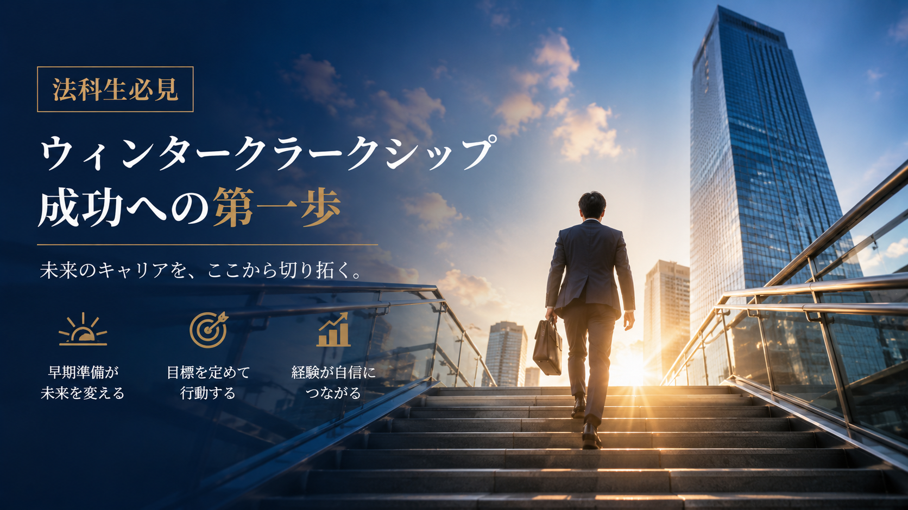

ウィンタークラーク解説
ウィンター・スプリングクラークとは？参加前に知るべき基礎知識と準備の極意

法科大学院（ロースクール）における就職活動において、夏の「サマークラーク」が最大の山場として語られることは少なくありません。しかし、夏の選考に間に合わなかった場合や、夏以降に飛躍的に法的な実力を伸ばした学生、あるいは特定の専門分野への志望動機が固まった学生にとって、2月から3月にかけて開催される「ウィンタークラーク」および「スプリングクラーク」は、形勢を完全に逆転させるための極めて重要なチャンスとなります。 企業法務系法律事務所の採用は年々早期化・複雑化しており、夏だけに頼らないマルチなアプローチが求められています。本記事では、ウィンター・スプリングのクラークシップの基本構造から、参加を勝ち取るために今すぐ行うべき準備の全貌を徹底的に解説します。
1. ウィンター・スプリングクラークの基本概要
ウィンタークラーク（冬期）およびスプリングクラーク（春期）とは、主に法科大学院の第2学年（または予備試験合格者等）を対象として、法律事務所が冬期休暇や春期休暇の期間（2月〜3月頃）に実施する短期の就業体験プログラム（インターンシップ）です。
-
実施期間と日数
通常、1日〜数日間（事務所によっては1週間程度）開催されます。夏と同様に、日当（1日約1万円程度）が支給されるケースが一般的です。四大法律事務所などの一部の事務所では、日当が廃止されているケースもあるため確認が必要です。 -
対象層の傾向
夏のサマークラークが「大量の母集団を形成する一大選考イベント」であるのに対し、冬・春のクラークは、より厳選された少人数で行われることが多く、予備試験合格者や、法科大学院での学業成績が上位の層がターゲットになりやすい傾向があります。
2. クラーク参加に向けた4つの事前準備ステップ
限られた募集枠の中で書類選考を突破し、さらに実務の場で成果を上げるためには、事前のインプットと戦略的な準備が不可欠です。以下の4つのステップを徹底してください。
-
ステップ①：事務所の最新動向・取扱分野の徹底的なリサーチ
各法律事務所の公式ホームページ、所属弁護士のプロフィールや専門分野、最近手掛けた大型案件のプレスリリース、さらにはパートナー弁護士が執筆した専門書や論文に目を通します。単に「企業法務をやっているから」ではなく、「なぜその事務所でなければならないのか」という固有の理由を紡ぎ出すための基礎データを頭に叩き込みます。 -
ステップ②：企業法務の基礎知識のインプット
クラークの現場では、実際の案件をベースにしたリサーチ課題や契約書レビューの補助が課されます。M&Aのスキーム、コーポレートガバナンスの潮流、独占禁止法や知的財産法の基本概念など、主要な企業法務分野の基本用語や実務上の論点を事前に予習しておきましょう。書籍だけでなく、ビジネス法務に関するWebメディアを活用するのも有効です。 -
ステップ③：自己分析とエピソードのブラッシュアップ
エントリーシート（ES）や面接で必ず問われる「自己PR」や「志望動機」について、自身の強みを裏付ける具体的なエピソード（数字や成果を伴うもの）を整理します。文章として書き上げるだけでなく、面接官からの予期せぬ深掘り質問にも論理的に答えられるよう、口頭でのシミュレーションを繰り返しておきます。 -
ステップ④：マクロ経済・業界ニュース・法改正トピックのキャッチアップ
法曹実務家は、法律の条文だけでなく、クライアントが直面するビジネスの文脈や社会的動向を理解している必要があります。コーポレートガバナンス・コードの改訂動向、AIやデータプライバシーに関する法規制、スタートアップ市場のトレンドなど、直近の重要ニュースに常にアンテナを張っておきましょう。
まとめ
冬や春のクラークは、夏に比べて実施規模が小さい分、一人ひとりの学生が弁護士と密にコミュニケーションを取れるチャンスでもあります。「夏に間に合わなかった」と諦めるのではなく、冬・春のチャンスに向けて周到な準備を行うことで、十分に対等以上に内定を掴み取ることが可能です。
四大法律事務所から地域密着の事務所まで、実際に訪問して先輩からウィンター・スプリングクラークのリアルな情報を集めてみませんか？
サークルに入会する